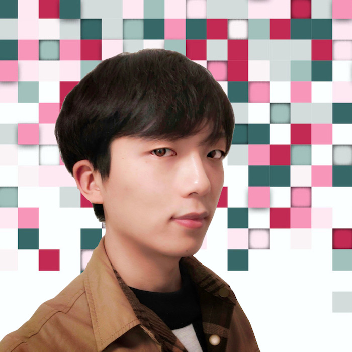
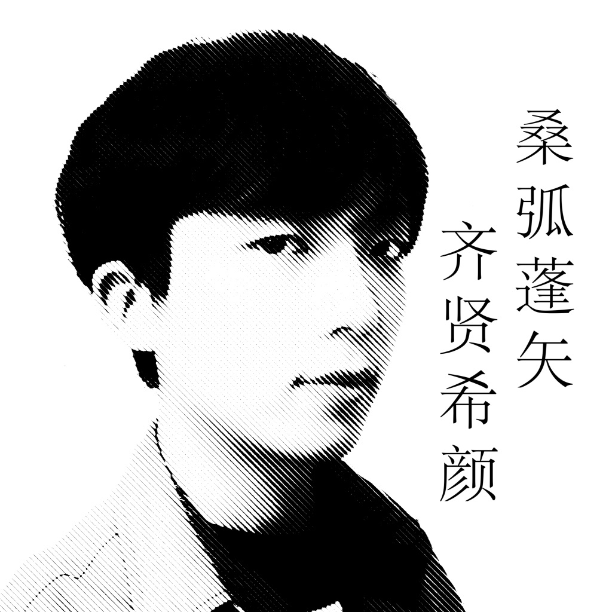

Bingcheng Hu
📞: +86-21-34206045
✉️: bingcheng@sjtu.edu.cn


EDUCATION
University of Michigan–Shanghai Jiao Tong University Joint Institute (JI)
Shanghai, China
B.S. in Electrical and Computer Engineering
Last Two years GPA: 3.5/4.0
Sept. 2016 - Present
SophiaUniversity
Tokyo, Japan
Winter Term Exchange Program
GPA:3.67/4.0
Feb. 2018 – Mar. 2018
PUBLICATIONS
- Bingcheng Hu, Tian Ding, Yuxin Peng, Li Liu & Xu wen (2020 )A flexible and attachable IMU-based motion capture system for measurement of hand kinematics: A pilot study, (Under Review)
- Xian Song, Yuxin Peng, Bingcheng Hu & Wenming Liu (2020) Characterization of the fine hand movement in badminton by a smart glove, Instrumentation Science & Technology, 48:4, 443-458,DOI: 10.1080/10739149.2020.1737814
RESEARCH EXPERIENCES
Collaborative Information Systems Lab - Shanghai Jiao Tong University, Prof. Cao
Shanghai, China
Project II: Research on Sentiment Analysis and Work Efficiency based on GitHub
Mar. 2019 – Present
- Built a crawler to pull requests from the Ruby community on GitHub and saved data in SQL database
- Analyzed the impact of sentiment consistency on the collaboration efficiency among developers
Project I: Recommender System Design based on Machine Learning - Team leader
Oct. 2018 – Present
- Designed a web crawler and crawled all the data on the OpenML website
- Trained the data and created a tag-based recommender system
Department of Physical Education and Sports Science - Zhejiang University, Prof. Peng
Hangzhou, China
Project II: Gesture Sensor with Six-Axis Gyro Control Design - Research Assistant
Jan. 2018 – May 2018
- Proposed IMU-based motion capture system, designed PCB boards with Altium
- Soldered and wired the device, manufactured a 3D printed shell with Solidworks
- Coded in C++ and Java for 3000+ lines to acquire, transmit, and post-process data
Project I: Hand Kinematics IMU-based Motion Capture System Design
Oct. 2017 – Feb. 2019
- Developed a data processing system independently in Java for 3D force sensor
- Designed and manufactured a gesture sensor with a bending sensor
- Created a gesture sensing device on inertial sensors MPU6050 and MPU9250
SELECTED PROJECTS EXPERIENCES
Course: Introduction to Computer Organization - Team Leader
Simulation and Implementation of 32-bit MIPS CPU
Sept. 2018 – Dec. 2018
- Modeled both single-cycle and 5-stage pipelined MIPS Architecture CPU in Verilog HDL to process data
- Synthesized the design with Xilinx and implemented the pipelined CPU on FPGA board free of error
SJTU-Company Innovation Practice Program for Undergraduates - Team Leader
Smart Light Bulbs Remote Control Design
Nov. 2017 - Nov. 2018
- Designed a lighting device with AutoCAD for indoor photography on ESP8266 board
- Wrote an Android app to remote control smart light bulbs through the internet
AWARDS & HORNORS
University Scholarship for Merit Student, SJTU
Scale: < 5%
2018-2019
University Third Scholarship for Academic Excellency, SJTU
Scale: 20% Nov. 2019
Nov. 2018
University Academic Improvement Scholarship
Scale: < 5%
Nov. 2018
2018 China-US Young Maker Competition (Shanghai) second prize
Scale: 2/30
Sept. 2018
2018 VEX Robot Shanghai Division Selection Competition first prize
Scale: 1/20
Jul. 2018
The 8th University Engineering Comprehensive Ability Competition first prize
Scale: 3/40
June 2018
PROFESSIONAL SKILLS
- Programming Language: MATLAB, C++, C, Python, Verilog HDL, MIPS Assembly
- Software: OrCAD, DataGraph, Mathematica, Xilinx, AutoCAD, CTex, Qt, Solidworks, Altium Designer
- Operating System: Linux, Android, iOS, macOS
- Skills: Native in Chinese; Fluent in English; Basic in Japanese